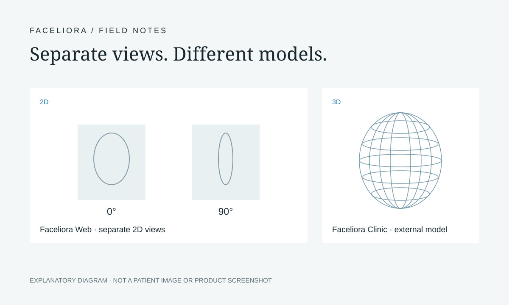

Two 2D Facial Views and a 3D Model: What’s the Difference?
“Seeing another angle” can describe two different experiences. Two separate 2D facial views, front (0°) and side (90°), are not the same thing as a 3D model. The two use different visual formats. Understanding the distinction helps you choose a demonstration, describe the information you have and ask clearer questions about what a view can show.

Start with the user and the visual format
Front (0°) and side (90°) 2D views can be used for facial analysis and 2D procedure simulation. These are two 2D views, not a rotatable 3D model.
Faceliora Clinic is 3D software for clinic teams. A facial model is created on a phone in an external capture application, then imported into Faceliora Clinic for viewing and adjustment alongside consultation. Faceliora Clinic does not itself perform the external capture step.

Ask what goes in and what comes out
For a demonstration that uses 2D views, ask what inputs are required, how each of the two views (front and side) is prepared and how the original view is distinguished from a simulation. Do not assume that an image, report or sharing option is available just because it is familiar from another application.
For Faceliora Clinic, describe your external capture application, device, application version and export settings. Ask whether that particular workflow can be supported and how the model is imported. A 3D export from one application should not be treated as automatically compatible with another.
Use each 2D view to formulate a question
The point of comparing perspectives is to describe what you want to discuss, rather than score a face or decide which procedure is needed. Keep the same feature or question in mind as you move between views, and ask how differences in the input or presentation affect the comparison.
- Front 0°: Which area am I looking at, and what change am I trying to describe?
- Side 90°: Which aspect of the profile do I want to ask about?
- Across both views: Which images are originals, which are simulations, and what should not be inferred from them?
A 3D model changes the viewing workflow
With Faceliora Clinic, the object brought into the software is an external 3D facial model. Ask the team to demonstrate the viewing and adjustment controls on an agreed sample. Confirm how the original model and an adjusted view are identified during a consultation.
Having a 3D model does not establish that it is clinically accurate or suitable for every purpose. Visible holes, distortion or incomplete areas should become questions for the capture and import workflow. Specific file formats, supported scanners and device compatibility must be confirmed with the team.
Keep 2D views and 3D models separate
An individual exploring 2D views can prepare questions about the two 2D views (front and side) and how to discuss an illustration with a clinician. A clinic evaluating Faceliora Clinic can prepare questions about external model creation, import, staff responsibilities and the consultation setting.
Confirm the current access route
For Faceliora Clinic, request a demonstration and explain your intended capture setup. Confirm access, supported import steps and any onboarding requirements with the team. No price, supported export-format list or mobile download date is established by this guide.
Leave the discussion with a short comparison note
Write down the product, whether you saw 2D views or an imported 3D model, what input was used and what was changed. Add one sentence about the question you still want to ask. A useful note identifies the evidence you saw without turning an illustration into a prediction.
If a treatment is being considered, take that question to a qualified clinician. The visual format can help organise a conversation, but it does not replace an individual assessment or guarantee that a proposed appearance can be achieved.